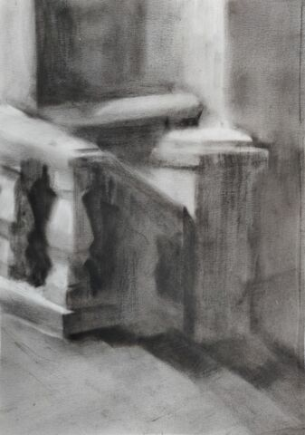
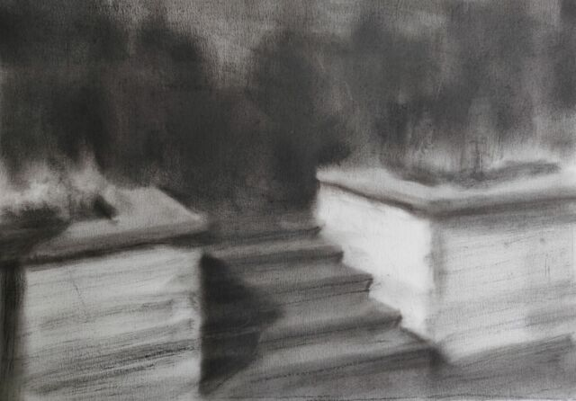
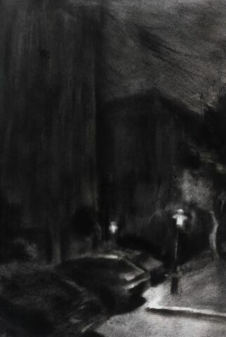

室外夜景训练
Contents
室外夜景训练#
- startat
2021-09-05
- status
Work in Progress
这是没能在 📅造型实验室 完成的课题，但因为是晓飞老师设置的课程，所以还是记录在这个目录下。
基本以西溪北苑的夜景为主，大晚上到处跑也很麻烦，下班回家提起画具下楼就能画，就保佑我每天晚上早点结束跳动吧。
材料#
同 室内场景训练。
要求#
短期作业，夜间室外写生任意场景，技术上和 室内场景训练 的要求一致，体现光和空间，不同的地方在于夜景的色域被整体 rebase 到黑上，可用的颜色变少了。
另外引入的要求是，要在画面中表现出 氛围和情感。
思路#
- 复健
需要重新熟悉材料，很久没画色粉了
- 感情
选择自己偏爱的场景容易生发出感情
作业#
以 anf (atmosphere and feeling) 为 ID。
- anf-001#
- 编号
anf-001
- 日期
2021-09-05
- 尺幅
- 媒介
- 画集
复健的第一张，果然色域被压缩之后更控制不好了，对于复杂的自然物象（树、草丛），没能找好亮暗面。

- anf-003#
- 编号
anf-003
- 日期
2021-09-06
- 尺幅
- 媒介
- 画集
依然打算画被路灯光圈笼罩的场景，在暗部和色序上加大了功夫，但还是不够。另一方面是纸（老人头粗面）不好。
对树的亮暗面归纳问题依然大，我知道答案是「看方向而非看颜色」，但实践起来还是很迷糊，我看不清。也许该看看
《向大师学绘画·素描基础》。
- anf-004#
- 编号
anf-004
- 日期
2021-09-08
- 尺幅
- 媒介
- 画集
把更多的精力放在色序上，有进步。照片拍出来不太对，难道我得搞一个相机吗？
两个问题：
画到后面还是凭直觉画了
色距有问题，但目前没有办法把精力放在上面
- anf-005#
- 编号
anf-005
- 日期
2021-09-09
- 尺幅
- 媒介
- 画集

感受到夜景的色距非常微妙而重要，要是盯着暗部找画里面的深浅的话，很容易就画得过亮，所以观察方法很重要。
夜景真是费碳粉，居然快用 撒 完了。

- anf-006#
- 编号
anf-006
- 日期
2021-09-14
- 尺幅
- 媒介
- 画集
小区的垃圾堆上吊着一个灯，光从上边倾泻到垃圾桶上，再淌到地上划出明显的阴影。在垃圾桶上边的光应该是空间上的锥形，但我画不好。
挑战了更复杂的场景，但却没带脑子，不太该。路边比之前的地方热闹，一开始有人站我身后看我又没发觉，可能还是紧张了，前一个小时都不知道自己在画什么，但对明暗的敏感已经成为条件反射了，结果上还好。
今天换了新的狼毫笔，非常舒服，羊毫在路上。画小场景的笔容易秃，一定要定时换。
- anf-007#
-
距离画上一张居然已经过去了两个月 :(
碳粉用完了，临时用矿物色粉接着画，着色力并不好，匆匆收场，总的来说不够认真。
- anf-008#
-
好，又半年过去了，要不是
👤YY想试试画碳粉我根本动不起来，近来画画的意义感丧失太多了。太久没画所以没有挑战复杂度，意识在很多事情也不容易搞砸。草地不上色应该更好，像夜里燃烧的白色火焰。
画碳粉真的好脏，房间刚刚刚大扫除完，第二天又花好多时间擦地板。
- anf-009#
-

准备再和
👤YY一起画夜景的前置练习。小区的地下停车场，楼梯间有灯光，也正好非常巧地没带小台灯。
用橡皮来修形状是不好的习惯，在这张练习里已经努力少用了，因此形体上也比较扭曲，不需要管，把注意力集中在秩序上吧。

{kind=link}
{kind=link}
{kind=link}
{kind=link}
{kind=link}
{kind=link}
{kind=link}
- anf-010#
-
 五一在
👤YY家画碳粉的的第一夜。挑了光影明确的栏杆画，但栏杆本身又过于复杂，且有不想用橡皮的别扭心里作祟，整个画面显得很混乱。
明明都五月了，夜里为什么还这么冷呢 Q_Q
{kind=link}
- anf-011#
-
 中间有一晚上没画（白天画了），晚上挤在沙发上讲画 OvO
天气稍微暖一些，也换了一个更简单的场景。
这次只在很少的地方用了橡皮， 大号的油画笔在小小的纸上当然是画不准形的，但正确的色序能够一定程度上弥补形体的缺陷，而且由色序所弥补的这部分，和和老老实实画的形体相比，会有更奇异的味道。
备注
这应该算是所谓「限制性作画」，有点像 📖 HUNTER X HUNTER 里的 「制约与誓约」
{kind=link}
{kind=link}
- anf-013#
-
👤YY的第三张，非常棒的一张！墙面（白）和石阶、地板（灰）的颜色没有很区分开，但灰的程度绝佳，相比下
《anf-011》就太黑了，和纯黑的背景结合起来就少了冲击感。「正确的色序能够一定程度上弥补形体的缺陷」在这张里同样成立。
我其实会觉得在这张开始，
👤YY可能进入了掌握碳粉材料的 flow 中，应该在这期间坚持多画，希望某人腿好一点后自己自觉多画点碳粉，不要没人陪着就不画了。
{kind=link}
- 西溪北苑的第十个夜晚#
-
 西溪北苑的第十个夜晚#
从
《anf-011》之后有了一些底气，两个月不画碳粉手生了也不会胆怯。之前的碳粉基本都在画近景（除了
《下雪的 768》），这张的终于把视野拉大拉远，要描绘的东西变多了，因此思路（先画什么，画到什么程度）也更重要了。看起来做的还不错，全程花了一个半小时，比较顺畅。杭州的晚上没有风，汗珠从渗出到滴落的过程也是顺畅的。
警告
顺畅的同时，好像又少了些味道，警惕之。
{kind=link}
{kind=link}
如果你有任何意见，请在此评论。 如果你留下了电子邮箱，我可能会通过 回复你。